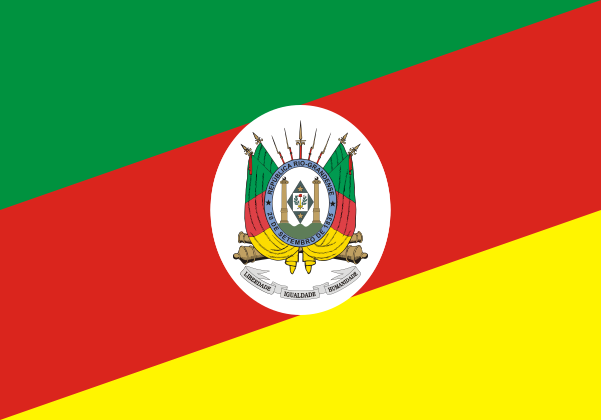

To be added
About me
My name is Levi. I was born in Rio Grande do Sul, Brazil and live with my family here. I am currently working as a Service Desk Analyst at Amcor. Outside of work, I'm an avid photographer, capturing the stunning animals and vibrant culture of my home state.

Rio Grande do Sul, Brazil
Rio Grande do Sul, the southernmost state in Brazil, is known for its diverse landscapes, ranging from coastal plains to the highlands of the Serra Gaúcha. The capital, Porto Alegre, is a cultural and economic hub. The state's rich heritage is influenced by European immigrants, indigenous peoples, and African heritage, reflected in its traditions, cuisine, and festivals. Economically, it is a leader in agriculture and industry, with a strong presence in agribusiness and manufacturing. Tourism thrives with attractions like Aparados da Serra National Park and the renowned vineyards of Vale dos Vinhedos.